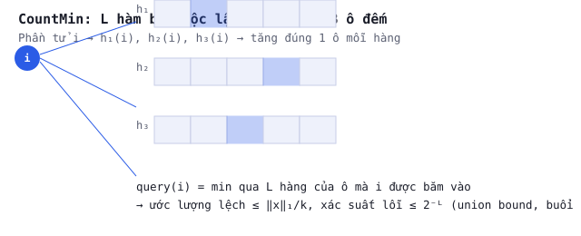

BUỔI 11 · Cấu trúc rời rạc
Hàm băm & k-wise independence
Hàm băm k-wise independent: đủ 'giả ngẫu nhiên' cho các chứng minh, nhưng rẻ hơn ngẫu nhiên hoàn toàn rất nhiều lần.
PHẦN 1/2
01
k-wise independent hashing
- Định nghĩa: xác suất đúng $1/b^k$ cho mọi k chỉ số
- Xây bằng đa thức bậc $\le k-1$ trên $\mathbb F_p$
- Chỉ cần $k\log p$ bit thay vì $n\log n$
Định nghĩa k-wise independence
Yếu hơn "ngẫu nhiên hoàn toàn" (cần lưu $n\log b$ bit) nhưng đủ mạnh cho hầu hết chứng minh chỉ dùng
đến $\mathbb E, \mathrm{Var}$ (2-wise) hoặc moment bậc 4 (4-wise).
Xây dựng bằng đa thức
Họ $\mathcal H_{\text{poly}}$ gồm mọi đa thức bậc $\le k-1$ trên trường hữu hạn $\mathbb F_p$:
theo nội suy Lagrange, với $k$ cặp $(i_r,j_r)$ cho trước tồn tại đúng một đa thức bậc $\le k-1$
đi qua tất cả — đây chính xác là điều kiện $k$-wise independent, và mỗi hàm chỉ cần $k\log p$ bit để
lưu (hệ số đa thức), thay vì $n\log n$ bit của bảng tra cứu đầy đủ.
PHẦN 2/2
02
Case study: CountMin/CountSketch chỉ cần 2-wise
- Phân tích phương sai CountMin chỉ dùng E, Var
- 2-wise đủ để $\mathrm{Cov}(\mathbf1[h(i){=}v],\mathbf1[h(j){=}v])=0$
- Tiết kiệm bộ nhớ hàm băm đáng kể
Vì sao CountMin chỉ cần 2-wise independent
Phân tích sai số CountMin (buổi 5, dùng Markov cho biến "nhiễu" $Z=\sum_{j\ne i}x_j\mathbf1[h(j){=}h(i)]$)
chỉ cần $\mathbb E[Z]$ — mà $\mathbb E[\mathbf1[h(j){=}h(i)]]=1/B$ chỉ đòi hỏi hàm băm 2-wise independent
(biết riêng từng cặp $(i,j)$ là đủ, không cần biết đồng thời hành vi của mọi phần tử). Đây là lý do
CountMin/CountSketch chỉ cần hàm băm tuyến tính $h(x)=(ax+b)\bmod p$ (2-wise), rẻ hơn nhiều so với
4-wise cần cho AMS (buổi 10).
